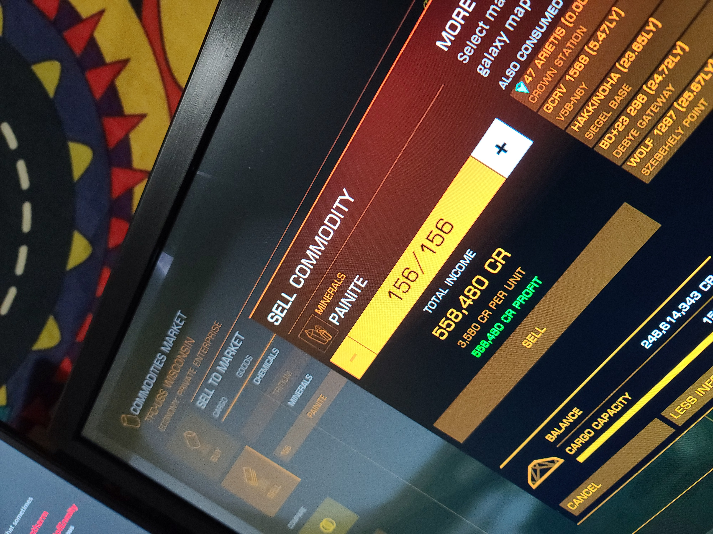

| Home | Terms | Images of the game | Learn to Mine | Links to various Resources | My Fleet |
Mining is currently the most profitable way to make money in Elite Dangerous.
Mining is a process that involves the following:
Here is a Short video that shows the process in more detail.
As you can see, Mining is not that difficult. It can be done in almost any ship in the game with minimal upgrades and can make you a lot of money quite quickly.
I have joined a mining company recently where I sell to a friend at a lower price and in return he sells me back other materials at a lower price than Galactic Average.
This is one such sell that I made to him.
